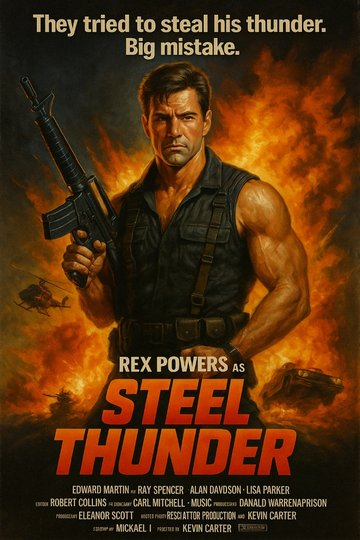

| |
[ Neighborhoods | Stardust Webring Hub | Heartstrike Tribute ] |
STEEL THUNDER (1985)
The Official Rex Powers VHS Shrine & Midnight Movie Archive
![[Tape Trader Certified]](../assets/badges/tape_trader.gif) |
![[Netscape Now 2.0]](../assets/badges/netscape_now.gif) |
Best viewed in Netscape Navigator 2.0+ at 800x600 resolution and 16-bit High Color
|
 [ Click poster for High-Res 1024x682 Master Scan ] Scanned from an original 1985 Dutch theatrical lobby one-sheet obtained from a video wholesaler in Rotterdam.
|
⚡ MOVIE DOSSIER & CREDITS
🔥 THE SYNOPSISWhen a renegade paramilitary syndicate hijacks a classified telemetry transport convoy belonging to Orion's experimental electronics division deep in the Sonoran badlands, the Pentagon refuses to negotiate. They send in the only man ruthless enough to detonate their mountain fortress from within: Captain John "Steel" Thunder (REX POWERS). Armed with a modified Colt Model 723 carbine, a customized explosive crossbow, and a customized 1978 Chevy Blazer fitted with reinforced titanium ramming armor, Thunder wages a one-man war across desert fuel depots and abandoned aircraft boneyards. "They took his commanding officer. They torched his garage. They tried to steal his thunder. BIG MISTAKE." |
| ⚡ THE LEGENDARY HEARTSTRIKE MONTAGE CONNECTION | |
|---|---|
|
Any true fan of 80s action cinema remembers Scene 14 (Timestamp 47:12): Rex Powers retreats to an abandoned copper smelter after the ambush at Dead Dog Pass. For four unbroken minutes, Powers lifts improvised barbell axles, welds reinforced steel plates onto his truck, and loads hollow-point rounds into magazines while sweat drips under sodium vapor lights. Blasting over this entire iconic montage is "Fire in Your Heart", the scorching breakout single from Cleveland rock band HEARTSTRIKE! The Rock & Cinema Lore: In early 1985, Heartstrike was still an unheralded five-piece playing gritty bar gigs around Cleveland and Akron. They had recorded their self-financed debut LP Strike First on an eight-track recorder for less than $1,500. Director Carl Mitchell was driving through Ohio during location scouting, heard "Fire in Your Heart" broadcast on a regional midnight college station, and immediately bought non-exclusive synchronization rights for $8,000 cash. Those soundtrack royalties saved Heartstrike from bankruptcy, allowed drummer Danny "Crash" Reynolds and bassist Glenn Thurman to buy their first tour van, and funded the band's legendary move to Los Angeles that summer!
|
| 📟 VHS COLLECTOR'S GUIDE & BOOTLEG TAPE EXCHANGE |
|---|
Latest Tape Trader Wanted Ad: "Looking for a 1st-generation SP-mode VHS copy of Steel Thunder with the original trailer reel intact. Will trade Japanese promo laserdisc rip of Nova Hart live in Tokyo (1985) or Heartstrike soundboard cassette from the Agora Ballroom (1984). E-mail me at: rex_thunder85@hollywood.geocities.com" |
|
THE 1980s RETRO CINEMA & ROCK WEBRING [ << Prev: Heartstrike Band Tribute ] • [ Rick's Stardust Hub ] • [ Usenet News Archive ] • [ Next Site >> ] |
This is an unofficial, non-profit fan site created in 1996. Steel Thunder, Rex Powers, and associated properties are copyright © 1985 Vanguard / Orion Pictures Corp. All rights reserved.